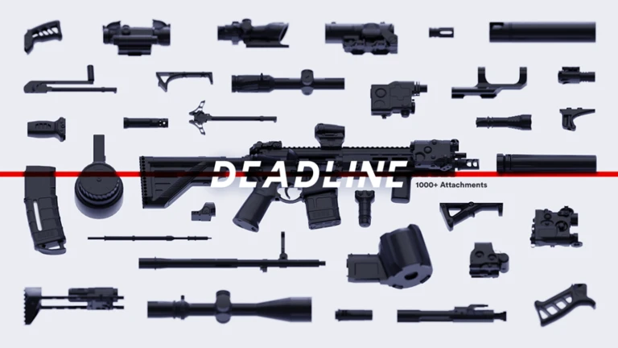
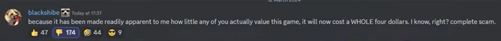
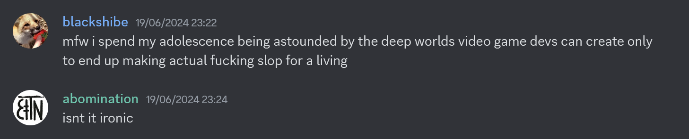

Implications of Deadline
Have you ever had a game blow up at the age of 13?
Intro

Deadline is a first person shooter released and in-development on the Roblox platform. In this article I will talk about my side of the development effort, though i couldn't achieve this without my friends - ScrubLord and GravityDefier being the biggest helpers.
For a while I've been meaning to write something about Deadline - what it means to keep working on for myself and others involved, especially since this game has been here ever since i hit puberty.
The reason for that is because i have personal regrets related to this game - things we all could have done better in hindsight, despite the fact this is the first game i've led, start to finish.
Gamedev takes effort, actually
Deadline began development in April 2019. I was fairly new to programming at the time, having done things only as a hobbyist and a 12 year old, and with only about a year of experience with Roblox. A friend named zfexer got me and scrub together to start working on a shooter of some kind.
I'd like to stress just how little we knew about game development - What is a core loop? What's the most important aspect of a game? How do you make it fun... we had ambitions but no answers.
We quickly went through 3 iterations of the game. We always had the theme of something methodical and in-depth in mind, but never an exact plan. We had fundamentally no idea how to design a game, so we did what felt right. The first two versions weren't much of note - We started, and we finished development rather quickly, never really having the time to even implement a gamemode.
It was "Deadline v3" that turned into the version that is enjoyed by millions today, but it carries our sins from the past on its back - to start, we never went through and did a proper design pass on anything we did, because we did it for fun.
You need to plan your game, actually
Roblox is full of projects just like Deadline - the main incentive of Roblox for many young developers is that you can easily get into developing your own game and have a shot at creating something popular at little to no cost of your own.
Now, ignoring issues with trapping kids on a platform that pays them less than 20% of what their work is actually worth with no option to sell their game elsewhere, the problem is that developing for the fun that you get out of writing core systems OF a game simply isn't the same as developing to finish A game.
You can see many projects on Roblox made just for fun - I think the entire 'gun testing' genre of games, as well as most up and coming game projects for Roblox are really just made because it's fun to write them. It doesn't take much looking around to see evidence of this - there is a ton of people who really just develop the "boilerplate" for a game, over and over again, like the gun viewmodel, and focus on detailing what they enjoy working with instead of what they should do to get a functional game. Sure, good gunplay should be perfected early, but it shouldn't be the first and only focus. Why doesn't anyone make a functional gamemode first? Depending on the game, it can be arguably more important.
This has wasted us years - we could have reached the same point we're at now far sooner, with the hindsight to just sit down and think. I think the hardest part of development wasn't learning the shitty Roblox language and API, but breaking through and actually doing what I have to do to help the game grow without procrascinating it.
As for the consequences - the biggest one that comes to mind is the progression system. when the 0.22.0 update released, we decided to announce the progression system coming to the game sooner or later.
This video details the shitshow that happened as a result. The game has become free to play since the incident.
The whole announcement was poorly received because people grew to expect a gun sandbox from Deadline - something this game wasn't. While we intended to make customization feel more free than in any other game, we by no means meant to keep every gun part and every gun free. We also failed to plan out the progression system properly, having found some parts of it unnecessary when implementing it.
Before 2024, we had no plan - progression was just a roadmap bullet point i kept shoving aside because I found no fun in implementing it. I was busier with other things. But In 2024, we ran out of time.
We noticed how much we fucked up in planning this game, and 5 years in development led to a game that barely broke ~700 USD a month in revenue after taxes for all of us. Starting January I found a job that paid ME personally over twice that as a programmer, and we couldn't really afford to keep development going for another year like this. It wasn't worth the time and my passion for this game is already exhausted enough, which I will talk about later.
Our team got together and sketched up a progression design that ended up rather inadequate for the rest of the game. This is what we announced - It certainly didn't help that the wider community reaction was to assume we'd make the game some form of "grindy" just because we were making people work for their guns despite our emotional attachment to making something fun, as we do actually care about this game.
I still find this reaction to having to pay for a game asinine and it's a part of why i fucking hate roblox
2 months later we stepped back from our original design plans, and have since left the progression model as It's implemented. You can buy any gun and any attachment provided you have the money, and it's relatively accessible given the playerbase earnings average of 4200$ per match. To add to this, microtransactions from selling currency are an extremely significant revenue stream which means we'll be able to keep feeding our mouths for a while, though we still can't earn a proper salary. The 80% Roblox revenue cut, taxes, and 3 people to pay a consistent salary means we individually still don't get shit.
In the end the gameplay we did plan ended up not rewarding enough to play with the gun builder locked away, which breaks the fun balance between the core loop: You play the game, you make money, you upgrade your gun. This is important because a lot of people spend most of their time in the gun editor - This causes a sort of domino effect where you often join the game only to be faced with lobbies where a map designed for a 20v20 is actually holding a 5v5 despite the server being full. As a result, people turn to the gun editor or leave because of the resulting issues with spawncamping and game balance. The game part of the game isn't fun enough, and it makes it less fun.
Progression is the industry-standard way to make people pay and come back. Everybody does it - Leaving the game as it was was just the equivalent of a playground, which can be great, but in this case it wasn't - We could have implemented this years ago, and made tens of thousands of dollars more, meaning we could've advanced development FAR faster than we did without creating false expectations for our fanbase. As for the fanbase...
Community management is draining, actually
If you follow Deadline you might have noticed the Discord server closed. A lot of people assume this was a sudden decision but It wasn't. I'm not meant to be a community manager, and I'm not personally willing to let someone else do the managing at the moment.
The benefits of having an official community also seem extremely overrated - The Discord, at its peak was 30K members with under a thousand active users in a game that reaches 300 thousand people monthly. This meant we were reaching a pretty small but active part of our userbase, which effectively made it an echo-chamber for getting any opinions and a mediocre announcement tool at best. The negatives on my personal mental health and the implications of managing the digital equivalent of a kindergarten aren't as negligible, though.
The server initially closed opportunistically because I was simply pissed off at the community. These people have been leeching off of my hard work, and now that I want to put a framework in place to be compensated for my effort, they forsake me. I'm not sure what I expected, but I didn't expect this.
The primary two reasons for permanently closing the server were how fucking bad It was for me personally to deal with, and how toxic it was. The moderation team I was responsible for building was pretty bad at dealing with trolls, which ended up creating a loop of making things even worse. It doesn't help that the average person there was about 15 years old.
Reading hurtful things about the game was affecting me long term. It's hard to ignore people calling the game shit over a single issue that I fixed in the development branch over and over again. On top of that It was about the same complaints, over and over again. I could deal with it sometimes, but sometimes I couldn't and ended up lashing out. Over time, I developed the attitude of treating fans of this game like some sort of mass rather than individual people because of how similiar everyone seemed to act. The same things that bothered me happened over and over, and they cut deep when I was already down. What didn't help is the ego I built up for the game - All I really had to keep going for was the belief that Deadline had some hidden redeeming quality, that it was actually great, because we certainly hadn't reached any substantial recognition and were making basically no money off of it.
I also kept most responsibility for moderating bug forum channels which I mismanaged pretty badly. Most of my social media use is based around Discord and Signal, so It became extremely annoying to get regular DMs from random people asking for stupid shit on top of people blatantly disregarding both server and forum rules when making posts. I also didn't put in any effort into making sure people would see the rules. Even though they were there, people clearly weren't bothering to read them, so I took the knee-jerk reaction of instabanning whoever seemed to act like an idiot in my eyes. I'm not sure whether this Discord gave me this attitude towards strangers or whether I was born an asshole, but in the end the result is the same. Is becoming a worse person worth the community?
I developed a disregarding attitude where I was no longer really listening to what people said or their genuine interest for the game, just looking for a reason to get them the fuck out of my sight - I had a long-standing reputation for "unjustified moderation actions", too. I started the Discord when I was 15 so spamming slurs, muting people for fun, or making jokes at other people's expense were all just sort of natural, at least in the early stages before we reached any level of recognition. I regret it all deeply.
Despite this, I do wish to reopen the server sometime. I'm just afraid of making the same mistakes - The "community reactions" aren't going to go away, and I don't know If I'll ever be able to just shrug them off.
I'm an asshole and It bothers me to be put in a place of power like this. I don't want to hire someone to manage the official Discord, I'd rather instead leave the whole process to people who wanna create their own communities out of choice rather than necessity.
Despite everything, I've met some life-changing people through this community. best friends, industry connections, game buddies, mentors, love.
sometimes the Discord wasn't as bad as I thought.
Losing passion happens, actually

I no longer believe in what made Deadline exist. Roblox is a constant limitation to what we can and can't do, and we have clearly outgrown this engine in more ways than i can count with all the fingers I have. I never wanted to create a free to play game, and I never really wanted to make something as void of meaning as Deadline.
The choices I made 5 years ago are still affecting me every day - We started on Roblox, we are finishing on Roblox. We started without a plan and we've only now changed course.
On the topic of meaning - It might surprise you that I'm barely even a gun nut. I grew up playing singleplayer story horror games and some shooters like phantom forces or GTA, never really caring how an AR15 operates in detail or whatever. GravityDefier gave me an interesting perspective regarding the FPS genre in general, too - What are we really doing this for? What are the implications of writing an FPS shooter? Are we just developing militarism propaganda? We never gave this game lore, or some deeper meaning, or something to make it feel special in the way my childhood games did. To me, It isn't art. It's just a game, and It isn't what I want to spend the next 10 years of my life doing.
My biggest concern is that It might just turn into another kind of office job. When I was young I wanted to avoid that at all costs - though I didn't consider the deeper implications behind that. Can you call working on Deadline a kind of office job? I don't answer to a boss - I don't have to make up reports or fill in my working hours and we're all mostly responsible for what happens to the game instead of some fucking moron with a college degree doing it for us, but the past 6 months have shown me an office job isn't just sitting in a cubicle.
I've worked on 4 separate games this year, and none of them mean what really got me into games in the first place. SOMA, The Final Station, Lost in Vivo, Minecraft, Receiver 2 are all games I hold close to my heart, yet I haven't come close to showing the world anything like them. I just turned 18 - A choice awaits to finally jump ship and start a Godot repo that'll finally grow into something new in my life, and something new to show the world.
We stuck with a middle school fun project that most people would have abandoned, and It changed us. What comes next isn't clear. I always learned as I went.
That's what Deadline taught me.